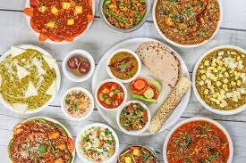
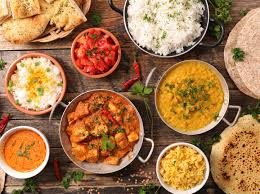
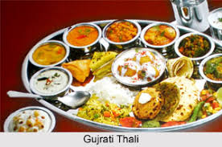
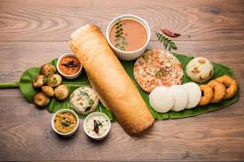

⮚ North Indian cuisine reflects strong Mughal influences, especially in dishes like biryani, kebabs, and rich gravies due to centuries of Persian and Central Asian rule.
⮚ North India primarily uses wheat, dairy (like paneer and ghee), and spices such as garam masala.
More information about this festival :- Click Here

⮚ Eastern Indian cuisine, especially in Bengal and Odisha, was shaped by maritime trade and colonial presence, introducing potatoes, chillies, and sweets like rasgulla during British rule.
⮚ East India is famous for its use of mustard oil and fish, especially in Bengal.
More information about this festival :- Click Here

⮚ Western Indian food, like in Gujarat and Maharashtra, evolved through ancient trade routes and Jain-Vaishnav religious practices, leading to mostly vegetarian diets with unique preservation methods like pickling and drying.
⮚ West India shows great diversity—from spicy Goan seafood (Portuguese influence) to Gujarat's sweet-and-sour vegetarian dishes.
More information about this festival :- Click Here

⮚ South Indian food has roots in ancient Dravidian culture and temple traditions, with rice, coconut, and fermented foods like dosa and idli being staples for thousands of years.
⮚ South India relies heavily on rice, coconut, tamarind, and curry leaves.
More information about this festival :- Click Here